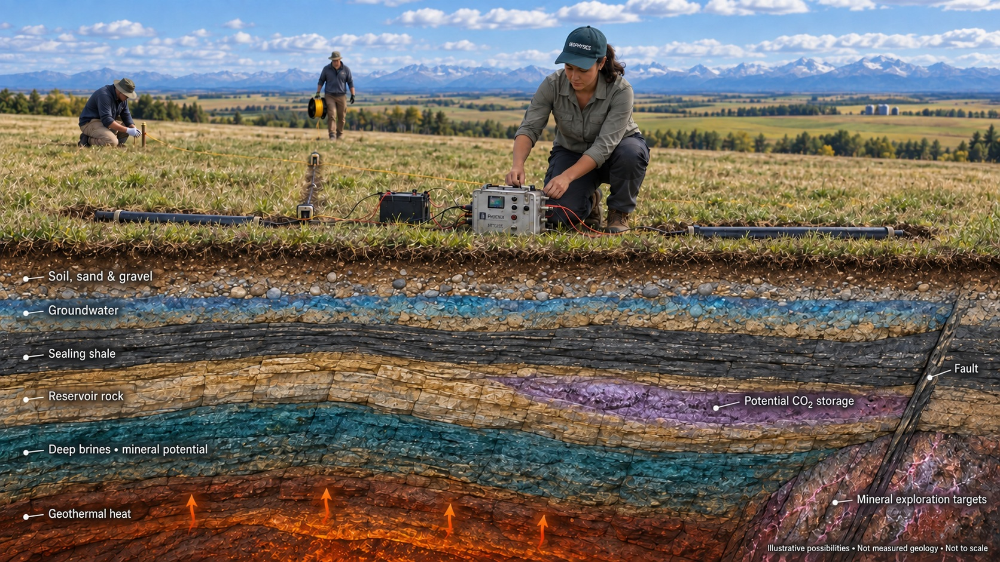
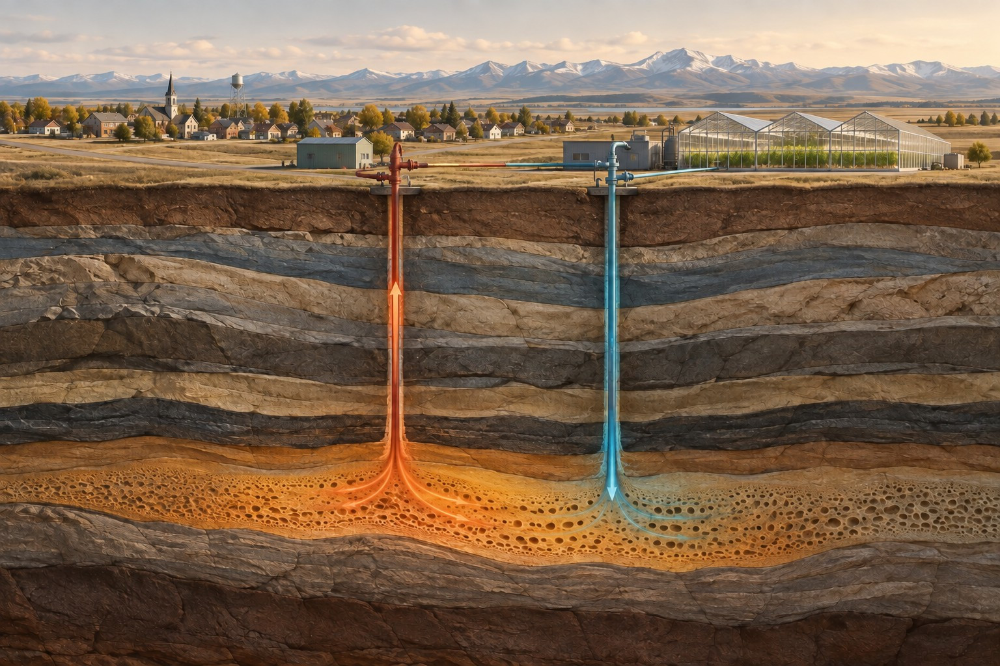
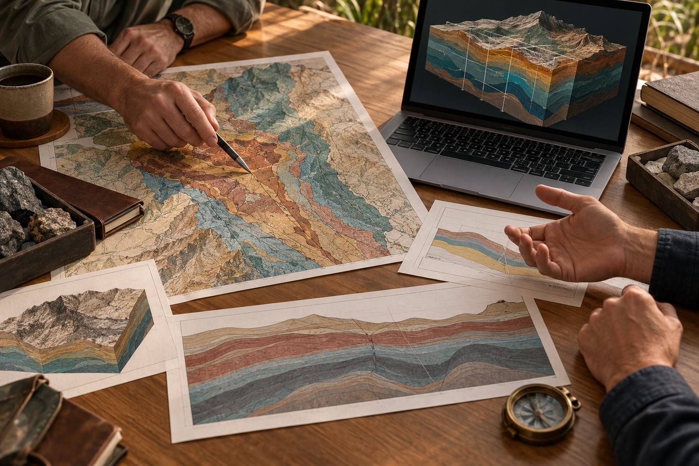

Find & review
Public records, historical surveys and the information you already own.
Understand more before you invest below ground. Dwell connects existing data, ground surveys and advanced computing to help you decide what comes next.
Explore your project
You do not need to know which survey to ask for. Tell us what you want to understand. We help choose the evidence that can answer it.

Could the geology support a geothermal opportunity? Start with the conditions beneath your project.

What lies beneath cover? Connect structures, rock properties and historical evidence.

Where should you investigate further? Understand the formations that may hold or move water.

A preliminary tabletop consultation is a structured first look at your project. We review your goals and available information, identify the most useful questions, and outline a sensible next step.
Public records, historical surveys and the information you already own.
Source licensed data or obtain targeted new measurements.
Process, model and interpret the evidence together.
Turn the findings into priorities, development options and a clear report.
Our supercomputing approach helps us work with large datasets and demanding three-dimensional models. Experienced interpretation turns that computing power into something useful: an explanation of what the evidence means for you.
Inside our approach

Field Development Planning connects the subsurface interpretation with where, when and how a project could move forward. We help compare options, sequence further investigation and identify the evidence needed before the next commitment.
Field Development PlanningSix complementary roles, from field acquisition and geology to modelling, environment and development.
Meet Dwell ↗Ten detailed guides explain what we measure, why it matters and what the results can tell you.
Technology library ↗Selected publications co-authored by Aline Menezes, plus sourced industry developments.
Research publications ↗Geothermal settings and mineral exploration beneath complex terrain.
Basin interpretation, geothermal opportunities and existing energy data.
Uranium exploration context, basin structures and emerging resource questions.
Mineral-system interpretation, groundwater questions and regional studies.
Service focus areas. Project scope and field logistics are assessed individually.
Our preliminary tabletop consultation helps define the focus before you commit to a larger programme.